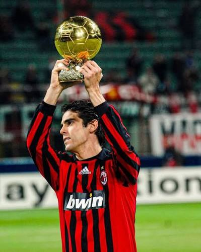

Historia de Kakà
Ricardo Izecson dos Santos Leite, conocido como Kakà, es un futbolista brasileño nacido el 22 de abril de 1985. Es considerado uno de los mejores centrocampistas del mundo y ganador del Balón de Oro en 2007. Kakà jugó en el AC Milan desde 2003 hasta 2012, donde se convirtió en una leyenda del club italiano.
Durante sus años en el AC Milan, Kakà ganó 2 Serie A, 1 Champions League y varios otros títulos. Su velocidad, habilidad técnica y capacidad goleadora lo hicieron uno de los jugadores más decisivos del club. Después del Milan, jugó en el Real Madrid, Orlando City y Orlando Pirates, consolidando su legado como uno de los grandes mediapuntas de la historia.
|
 |
|